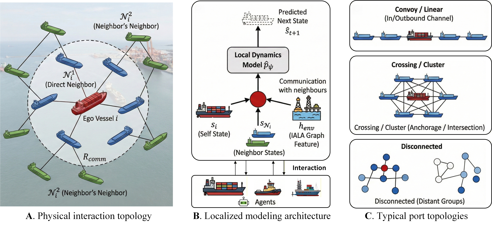
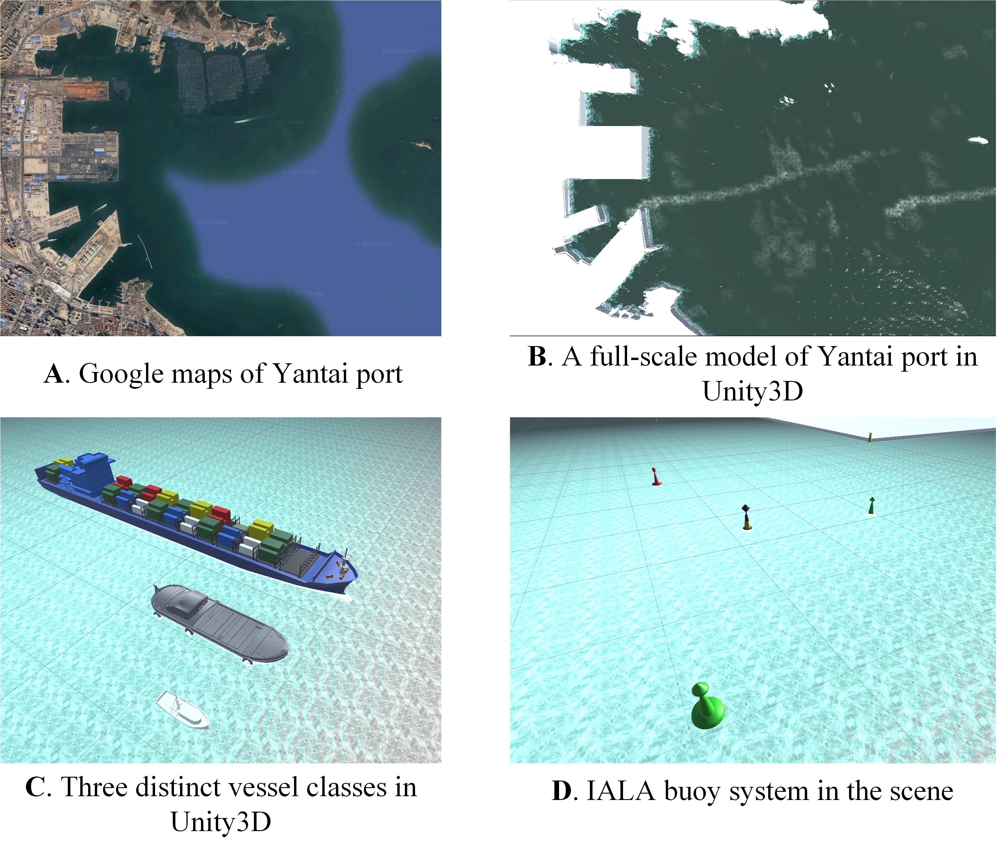
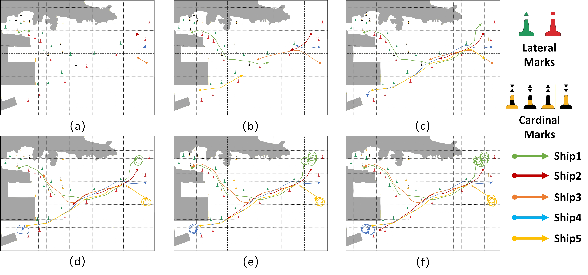
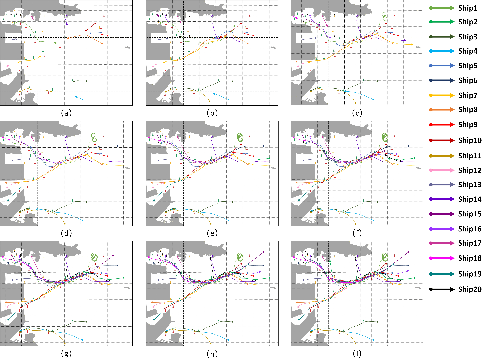

Increasing maritime traffic has intensified congestion and safety risks in major ports, requiring scalable and rule-compliant autonomous decision-making for multi-vessel operations. Existing centralized coordination methods suffer from excessive communication overhead, while decentralized approaches often struggle to maintain coordination quality and stable compliance with the International Regulations for Preventing Collisions at Sea (COLREGs) and the International Association of Marine Aids to Navigation and Lighthouse Authorities (IALA) buoyage rules. This paper proposes K-TIMARL, a topology-integrated multi-agent reinforcement learning framework for large-scale port vessel traffic management.
Based on a $\xi$-dependent networked MDP, K-TIMARL restricts coordination to k-hop neighborhoods and integrates per-vessel dynamics models with branched rollouts to improve sample efficiency and reduce communication cost. A graph-attention-based IALA buoy embedding and a hybrid reward function are further introduced to promote channel-aware and COLREGs-compliant maneuvers. The framework is validated in a high-fidelity full-scale Unity3D digital twin of Yantai Port under wind-wave disturbances and heterogeneous vessel dynamics.
In the 20-vessel high-density scenario, K-TIMARL achieves an 88.6% success rate, a 99.3% COLREGs compliance rate, and only 0.05 collision violations per episode, while reducing communication cost by 85.1% compared with centralized baselines.
Fig. 1. Comparison of communication architectures and the K-TIMARL framework.

Fig. 2. Illustration of the topological perception and localized modeling framework. (A) Physical interaction topology; (B) Localized modeling architecture; (C) Typical port topologies.

Fig. 5. High-fidelity digital twin of Yantai Port in Unity3D, featuring heterogeneous vessels and IALA buoys.

Fig. 8. Trajectory visualization of the 5-vessel low-density scenario.

Fig. 24. Step-by-step trajectory visualization of the 20-vessel high-density scenario.
| Algorithm | Success Rate (%) | Collision Rate | Comm. Cost (MB) |
|---|---|---|---|
| PPO | 76.45 | 0.22 | 12.45 |
| MAPPO | 81.20 | 0.14 | 12.42 |
| K-TIMARL (Ours) | 88.60 | 0.05 | 1.85 |
Table 4. K-TIMARL achieves the highest success rate and lowest communication cost in high-density traffic.